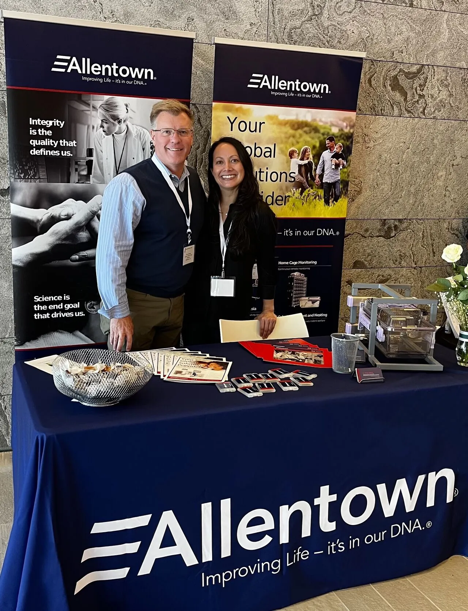
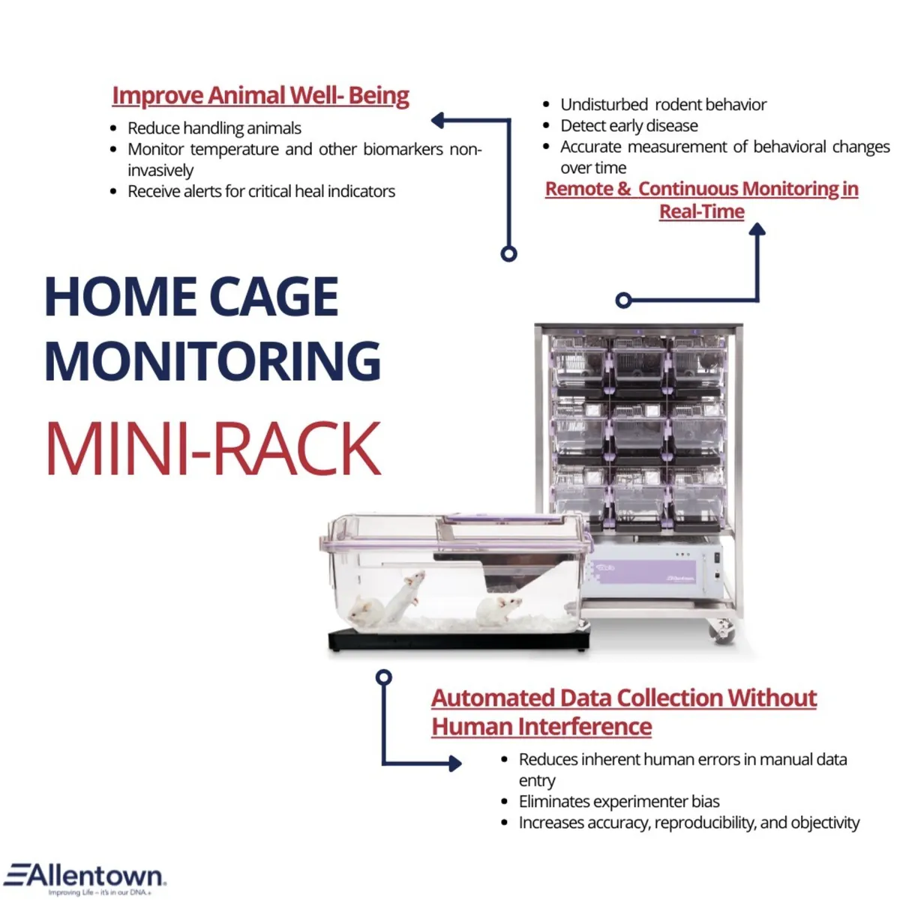
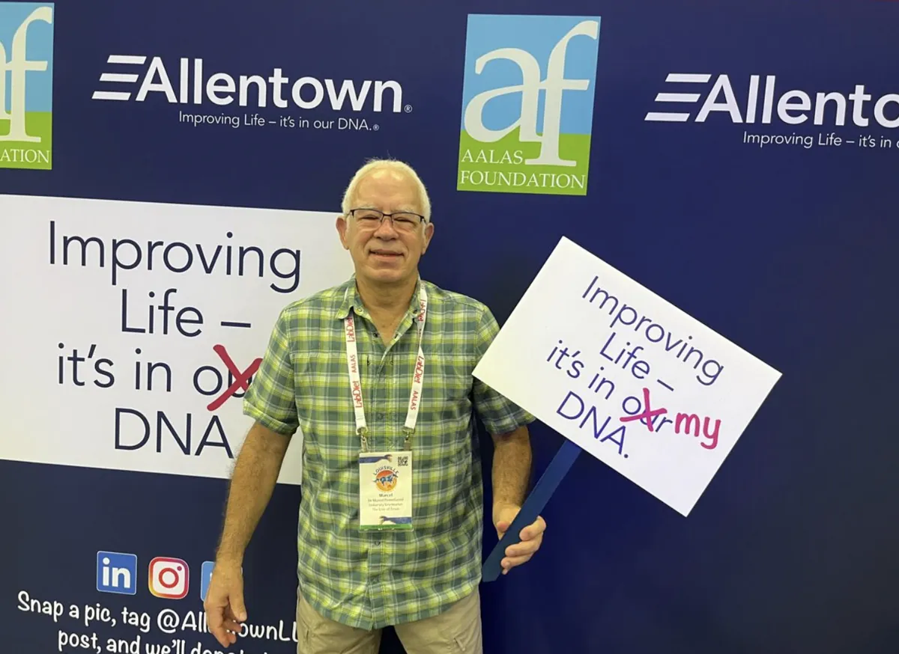
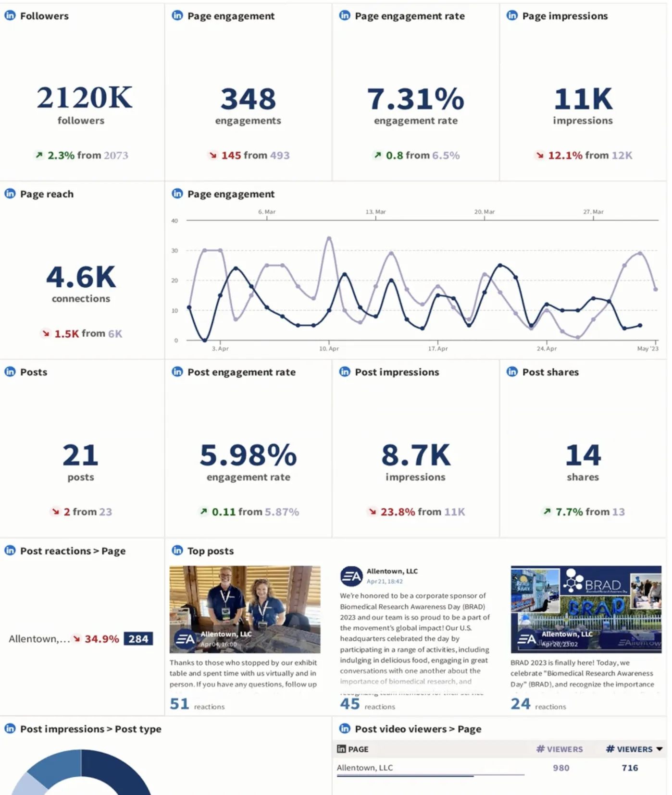

Case Study 03 · B2B Digital Marketing & Lead Generation
Building a Digital Growth Engine for a Specialized B2B Brand
How I helped a specialized B2B company expand its digital presence, launch its first paid advertising campaign, and turn online visibility into qualified business opportunities.

A niche industry.
A limited audience.
Allentown operated in a highly specialized B2B market, where reaching the right decision-makers mattered more than reaching the largest audience.
With limited digital marketing infrastructure and no established paid advertising strategy, there was an opportunity to turn its online presence into a stronger source of business growth.
The challenge: reach a narrow audience and turn visibility into qualified leads.

Make digital marketing
a growth channel.
I focused on three priorities.
Digital Presence
Strengthened social media and website content to increase visibility, consistency, and engagement.
Paid Lead Generation
Introduced the company's first paid digital advertising campaign, targeting relevant B2B audiences.
Measurement & Optimization
Leveraged analytics, reporting, and marketing technology to improve campaign performance and inform future decisions.
From visibility
to opportunity.
Organic & Social Marketing
Developed targeted content and strengthened the brand's presence across LinkedIn, Instagram, and Twitter.

Paid Advertising
Launched the company's first digital advertising campaign, creating a new channel for qualified lead generation.
Website & Marketing Technology
Optimized website content for search and introduced tools to improve marketing efficiency, reporting, and campaign management.

Reaching the right people.
Driving real opportunities.
Generated through the company's first paid digital advertising campaign.
Achieved across LinkedIn, Instagram, and Twitter.
Established more effective systems for content management, analytics, and campaign optimization.
What began as an opportunity to improve digital visibility became a measurable channel for reaching prospective customers.
The result wasn't just a larger audience. It was a stronger pipeline of business opportunities.
My Role
Marketing Coordinator → Marketing & Digital Specialist
Allentown, LLC
2022 – 2024
Back to the start · 01